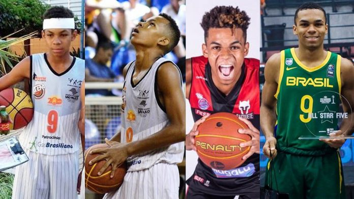
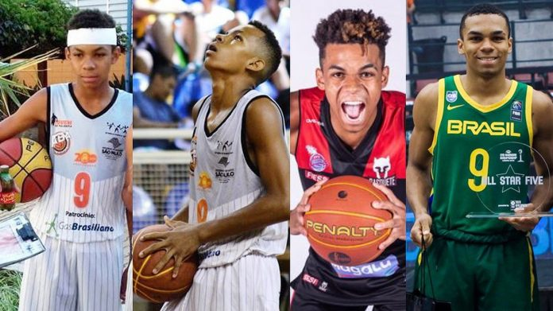

O ala-armador Reynan Gabriel Camilo dos Santos,
do Sesi Franca, teve seu nome anunciado na última convocação técnico Gustavo De Conti para integrar o período
de treinamentos do grupo que disputará a segunda
fase das Eliminatórias da Copa do Mundo.
O jogador de 18 anos nasceu em Araraquara no dia 14 de fevereiro de 2004 e cresceu no Jardim Cruzeiro Sul,
onde ainda criança, aos nove anos de idade,
conheceu o Projeto Sonhando Alto da Associação de Basquetebol de Araraquara (ABA), que utiliza o basquetebol
como ferramenta de inclusão social e trabalha
com aproximadamente 600 crianças e jovens de 7 a 19 anos, que devem estar matriculados na escola, seja pública
ou particular, já que existe acompanhamento da
frequência escolar.
À principio, o menino gostava de jogar futebol, por isso abandonou o projeto após as primeira aulas, mas foi
convencido a voltar por um amigo, chamado Raul, e aos
poucos foi tomando gosto pelo basquete. Com o professor Guilherme Camargo, seu talento foi lapidado e passou a
integrar as equipes de base da ABA/Fundesport.
Nessa época, dividia os treinos e jogos com a vida escolar.
O diretor da ABA, Eduardo Di Pói, não esconde o orgulho ao falar do primeiro aluno do projeto a chegar à Seleção
Brasileira principal. "O Reynan sempre foi um menino diferenciado e já vimos potencial nele logo no início. Quando ele
tinha 13 anos, o trouxemos para as categorias de base, mas já jogava no sub-15. Ele sempre jogou as categorias superiores
à sua idade. Quando ele tinha 15, já jogava no 17 e foi aí que Franca o levou", recorda. Para Eduardo, Reynan reúne qualidades que podem fazê-lo alçar voos cada vez mais altos no basquetebol. "Temos uma grande esperança que
esse menino seja o primeiro araraquarense a atuar na NBA. Ele tem muito potencial para estar lá, está sendo visto como a maior revelação
do basquete brasileiro. Chegar em uma seleção de base é muito dificil, agora chegar em uma seleção adulta com 18 anos é mais dificil ainda.
Temos muita convicção de que ele será draftado. Torço muito para ele e torço muito para isso", completou.
Ida para Franca
Em 2018, Reynan chamou a atenção da equipe do Sesi Franca, uma das mais tradicionais da modalidade, que o contratou. Com 15 anos, veio a insegurança
por morar sozinho pela primeira vez, mas ele contou com o incentivo da mãe, Luana Camilo, e a partir daí passou a encarar o basquete como principal foco
de sua vida. A dedicação o levou a ser integrado ao elenco principal de seu time, onde jogou ao lado de atletas que sempre foram vistos como ídolos para ele
Foi convocado pela Seleção Brasileira Sub-18 e posteriomente pela Sub-23, comandada por Tiago Splitter, ex-jogador da NBA, a quem o araraquarense também se mostra
agradecido pelo aprendizado
Em Franca, Reynan também participou, no ano passado, da conquista do título do Novo Basquete Brasil (NBB), competição que reúne as maiores equipes do basquete
masculino do país.
Cestinha em Araraquara
No último dia 6 de agosto, Reynan esteve em quadra em Araraquara, no Ginásio do Sesi, onde atuou contra o time de sua cidade natal. Com a camisa do Sesi Franca,
ele foi o cestinha do jogo que terminou com a vitória de sua equipe por 98 a 78 sobre o AZ Araraquara pelo Campeonato Paulista da Divisão Especial Masculina.
Diante de sua mãe Luana, de familiares e amigos, o jovem foi o cestinha da partida ao anotar 29 pontos, além de ter somado nove rebotes e uma assistência.
"Estou feliz em jogar na minha cidade, depois de três anos que fui pra Franca. Ver minha família toda unida, todos vieram ao ginásio, é uma felicidade imensa"
comentou o atleta, na ocasião.
Após a partida, o técnico Helinho, do Sesi Franca, elogiou a evolução do jogador. "O Reynan é um desses jogadores que estão sendo trabalhados desde os 14, 15 anos
para que possa ter o crescimento. É fruto do trabalho dos técnicos da base, Miltinho, Pablo e Zezinho. Ele está ganhando rápido essa maturidade e com 18 anos
já está maduro o suficiente para entrar num jogo duro como esse de Araraquara e dar sua parcela de contribuição. Jogou muito bem, com muita personalidade",
avaliou seu treinador.
Sonho de atuar na NBA
No ano que vem, Reynan completa 19 anos e poderá ter a chance de disputar o draft, nome dado à seletiva para a tão sonhada NBA, a liga norte-americana de
basquetebol, que reúne os maiores astros da modalidade no planeta. "Sou um moleque sonhador, meu foco é chegar na NBA. Sonho alto e me sinto capacitado.
Vou continuar trabalhando, evoluindo, mas quero chegar na NBA, ser draftado. Eu me imagino lá, me vem na cabeça. Eu acompanho bastante, não tenho preferência
por um time para ser draftado, todos são tops. Todo trabalho tem sua recompensa, então fico tranquilo, não fico ansioso. Mas quando meu nome for chamado lá,
acho que não vou conseguir segurar as lágrimas, porque sempre me pego pensando nisso. Chegar na NBA é o sonho de todo jogador", disse recentemente o atleta,
que também tem o objetivo de fazer uma faculdade de administração ou contabilidade
Reynan: O araraquarense que é uma promessa do basquete brasileiro
Reynan é um jovem garoto promissor,
onde sempre sonhou chegar aonde está, atualmente jogando nos estados unidos. Reynan saiu de araraquara para francaem busca de um sonho...
Nascido em Araraquara,
interior de São Paulo, Reynan teve os primeiros contatos com o basquete por meio do projeto "Sonhando alto", no bairro Jardim Cruzeiro do Sul.
Mas, como ele disse, não teme coisa alguma.
Aos 15 anos, saiu de casa e chegou ao Franca, onde passou a ser tratado como joia. Destacou-se e integrou o time que foi campeão do NBB pela primeira vez,
em 2021/2022. O bi veio na temporada seguinte.
"Eu comecei em um projeto, no 'Sonhando alto', e, desde lá, queria algo grande. Eu sonhei com esse objetivo que eu estou vivendo agora.
Sonhava e almejava algo assim. Olhar para trás e ver que deixei minha
família e amigos por algo maior, me motiva.
Um dos pontos que chamou a atenção foi a coragem em quadra. "Eu não tenho medo de nada, não. Tenho de ir para cima mesmo. Sou esse moleque ousado.
O que der vontade de fazer, vamos fazer em quadra;
Se o cara é Top 1 ou Top 50, estou lá para fazer o meu trabalho".
Sonho da NBA
Há pouco mais de dois meses, Reynan fez um movimento considerado ousado.
Notificou o Franca — clube com o qual tinha contrato até o fim do ano que vem — a saída e partiu para os Estados Unidos. Na Terra do Tio Sam, defende o
Cold Hearts, que disputa o Overtime Elite, liga criada em 2021
e que envolve jogadores de 16 a 20 anos, de diversas nacionalidades…
Reynan no inicio

>
vídeo
Caso o seu navegador nao suportar o elemento video, acesse o link abaixo!!
Reynan no inicio
 >